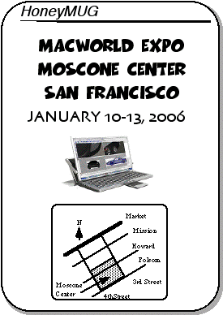
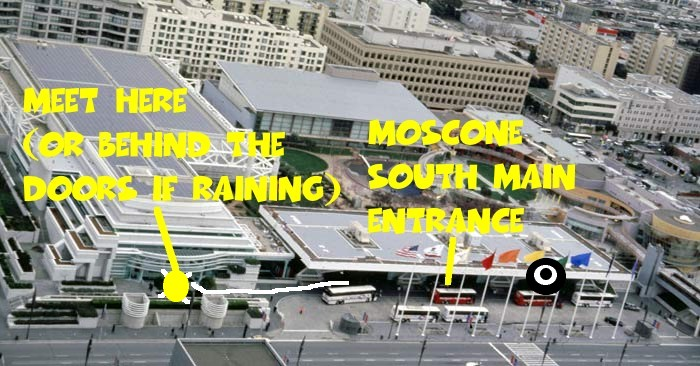

MacWorld Expo 2006 Meeting Notice

2005 MUG highlights
Kevin, Mike, Tracy, and Alex attended MWSF 2005
The biggest story this year was Apple announcing a switch to Intel processors during last June's WWDC. It was also revealed that OSX has been secretly developed for Intel processors for the past five years. The first Intel Macs are due by the middle of 2006, with a two year transition period before the entire Mac line becomes Intel-based. Apple/IBM/Motorola gave a good attempt with over ten years of PowerPC-based Macs, but it wasn't good enough and there are enough mistakes and blame to go around. It's time for everyone to move on.
In other product news, Apple has been very busy. First came the iPod Shuffle and Mac Mini. Then came an update to the iMac G5 and the release of Tiger in April. Although overshadowed by the switch to Intel CPUs, Apple announced OSX 10.5 Leopard for a late 2006 release to go head-to-head with Windows Vista. Later in the year came the iPod nano and video, updated PowerMacs, a minor PowerBook update, and another iMac G5 update which becomes more consumer friendly with media integration and a lot of built-in features (Bluetooth, wireless, iSight, remote) which cost a lot on Wintel machines.
The iTunes Music Store continued its dominance as some of its competitors such as Real, Virgin, and Wal-Mart either failed to gain market share or left the online music business entirely. The addition of video content further tightened Apple's grip on the fast-growing legal digital download business. The continued strength in the iPod and music business, the growth of Mac market share, and continued Microsoft missteps propelled AAPL stock to new highs.
Rumors indicate that this Expo may see the early announcement of Intel-based Macs.
Apple purchases by HoneyMUG members:
- PowerBook G4 - Mike, three times!
- Mac mini - Mike and Alex
- iPod - Alex
Happy Holidays to all,
Alex
The Meeting
As usual, we will be having our regular lunch/dinner get-togethers at Macworld. The meetings will occur during all days of this years' show. This time, all meeting times are at 1pm to beat the lunch crowds.The meeting times are
* January 10, 2006 between 1:00-1:15pm
* January 11, 2006 between 1:00-1:15pm
* January 12, 2006 between 1:00-1:15pm
* January 13, 2006 between 1:00-1:15pm
If you get lost, give ASACMUG a call:
Alex Morando seven-one-four--four-eight-eight--fifty-four-ninety-three
Mike Quan three-one-zero--four-six-three-twenty-seven-oh-eight
To avoid confusion in the past with the ASCII-rendered location of the meeting place, we now have a NEW meeting place, on the NorthEast corner closer to the conference ballrooms. The picture is attached below; the meeting location is marked with a yellow circle and will be moved inside (opposite the doors and windows) in the event of rain. For reference, the OLD meeting location is noted by a black circle.
